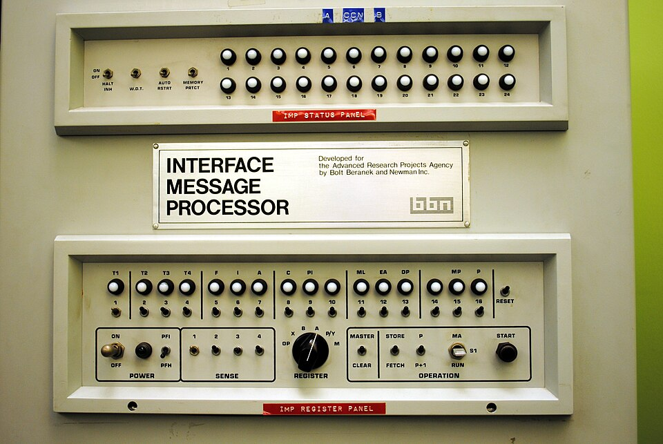
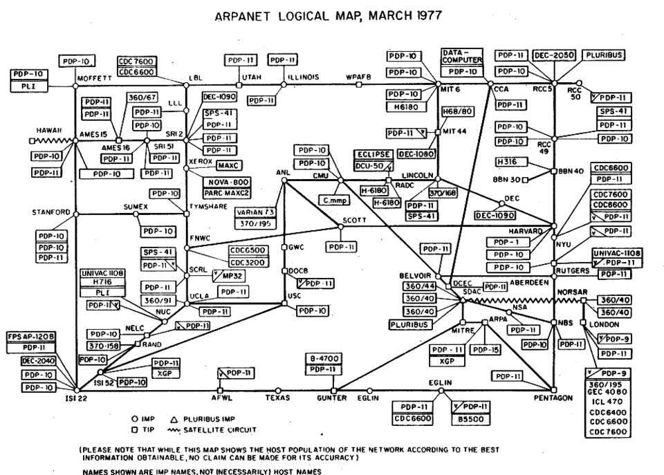
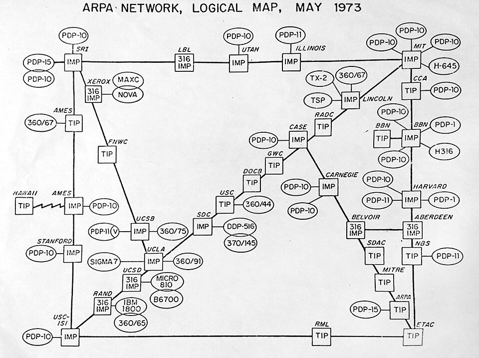
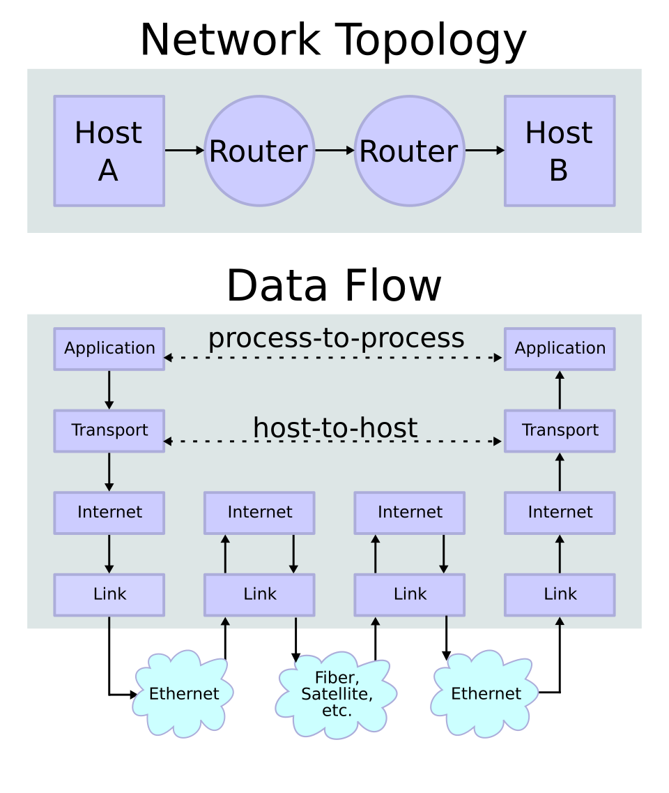
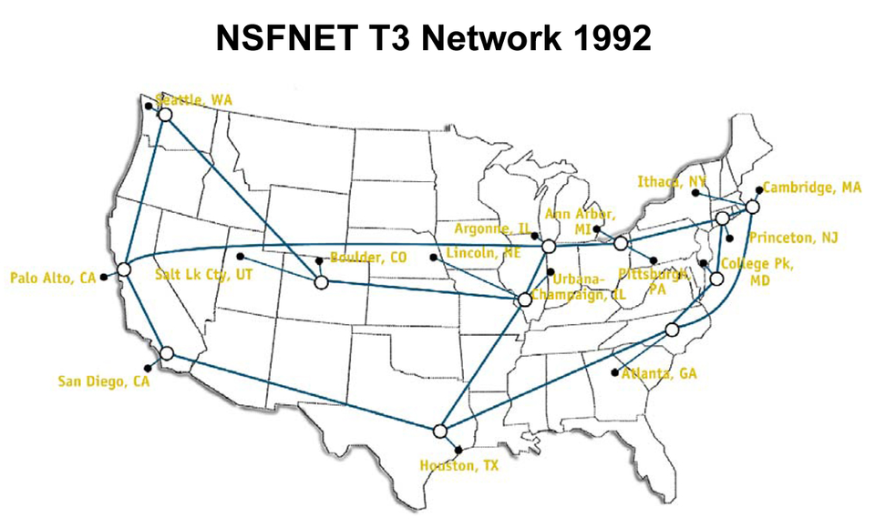
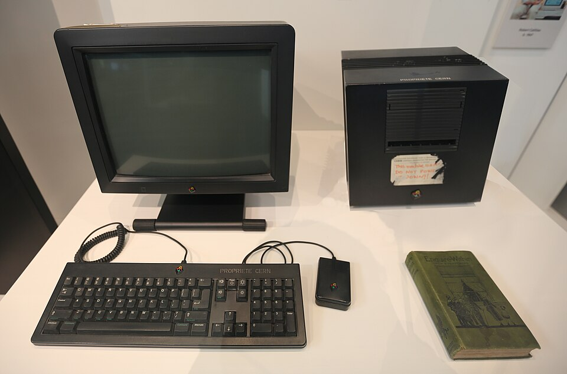
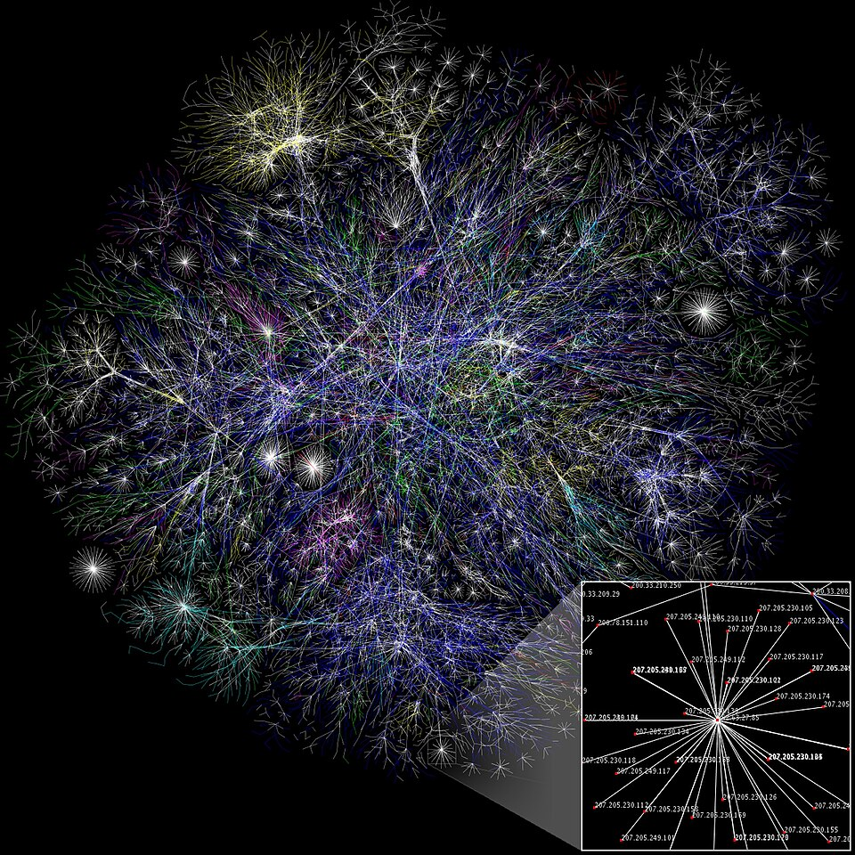
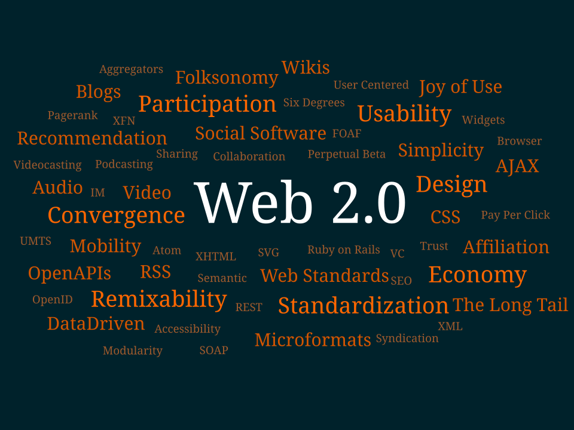

Programação para Internet
Módulo 1 — Fundamentos da Web
Como a Web funciona por baixo dos panos
Aula 1
Curso Superior de Tecnologia em Análise e Desenvolvimento de Sistemas (ADS)
O que veremos hoje
- 🕰️História da Web — de onde ela veio.
- 🌐Internet × Web — não são a mesma coisa.
- 🔁Arquitetura cliente-servidor — quem pede e quem responde.
- 🔗URL, domínio e DNS — como achamos um site.
- 🖥️Navegador e servidor Web — os dois lados.
- 📨HTTP e HTTPS — o idioma da Web.
- 🛠️Métodos HTTP — verbos das requisições.
- 🚦Códigos de status HTTP — as respostas do servidor.
História da Web
Antes de programar para a Web, vale entender como ela chegou até aqui. A seguir, a linha do tempo que vai do contexto da Guerra Fria até a Web de hoje:
História da Web
1957 — Sputnik e a Guerra Fria
O lançamento do satélite soviético Sputnik acelerou a preocupação dos EUA com pesquisa científica e tecnológica estratégica. Esse contexto criou um ambiente de forte investimento governamental em ciência, computação e comunicação.

História da Web
1958 — Criação da ARPA
O governo dos EUA cria a ARPA (Advanced Research Projects Agency), uma agência do Departamento de Defesa voltada ao financiamento e à coordenação de pesquisas avançadas. Não era uma fundação, e sim uma agência pública ligada à defesa nacional.
História da Web
Início dos anos 1960 — Licklider e a "Galactic Network"
J. C. R. Licklider, pesquisador de computação interativa, defende a ideia de computadores conectados em rede, permitindo comunicação e compartilhamento entre pesquisadores e instituições. Essa visão ficou conhecida como “Galactic Network” — precursora da Internet.

História da Web
Anos 1960 — Computadores caros e isolados
Universidades e centros de pesquisa tinham grandes computadores isolados, caros e difíceis de compartilhar. A ARPA financiava vários desses centros e passou a buscar formas de conectá-los: compartilhar recursos, comunicar pesquisadores e experimentar redes descentralizadas.

História da Web
1966 — Bob Taylor consegue apoio para o projeto
Dentro da ARPA, Bob Taylor percebe que os centros financiados tinham computadores diferentes e isolados — cada um exigia terminal e conexão separados. Ele defende a criação de uma rede que os interligasse e consegue o financiamento para iniciar o projeto.
História da Web
1966–1968 — Larry Roberts estrutura a ARPANET
Larry Roberts assume o papel central no planejamento técnico e transforma a ideia em um projeto concreto de rede experimental. O projeto foi coordenado pela ARPA e envolveu universidades, centros de pesquisa e empresas contratadas.
Bob Taylor → defesa e financiamento
Larry Roberts → estruturação técnica
BBN → construção dos IMPs · UCLA → 1º nó
História da Web
1968/1969 — BBN e os IMPs
A ARPA contrata a empresa BBN (Bolt Beranek and Newman) para construir os IMPs (Interface Message Processors): minicomputadores que interligavam os computadores das instituições, funcionando como precursores dos roteadores.
História da Web
1969 — ARPANET
A ARPANET entra em operação como uma das principais origens da Internet. O 1º nó foi na UCLA (Boelter Hall, sala 3420); a 1ª mensagem foi para o Stanford Research Institute, tentando enviar a palavra LOGIN — chegaram só as letras LO.
Não há grandes registros do dia: as pessoas não faziam ideia de que ali se reduziam distâncias e o mundo não seria mais o mesmo.

História da Web
Anos 1970 — Expansão da ARPANET
A ARPANET se expande para outras universidades, centros de pesquisa e instituições. Consolidam-se ideias fundamentais como comutação de pacotes, protocolos de comunicação e a interligação entre computadores heterogêneos.

História da Web
1983 — TCP/IP
A adoção do TCP/IP consolida a Internet como uma rede de redes. A partir daí, redes diferentes passam a se interconectar usando um conjunto comum de protocolos — a base técnica da Internet até hoje.

História da Web
1985 — NSFNET
A National Science Foundation cria a NSFNET, uma rede acadêmica de alta velocidade ligando centros de supercomputação e universidades nos EUA. Torna-se uma importante espinha dorsal da Internet acadêmica e amplia o acesso para além do ambiente militar.

História da Web
1989 — Proposta da Web
Tim Berners-Lee propõe, no CERN, um sistema de hipertexto para compartilhar informações científicas. Essa proposta daria origem à World Wide Web.
História da Web
1990/1991 — Primeira Web
Surgem os elementos fundamentais da Web: HTML, URL, HTTP, o primeiro navegador e o primeiro servidor Web. A Web passa a funcionar sobre a infraestrutura da Internet, tornando a navegação por documentos interligados simples e acessível.

História da Web
1993 — Mosaic
O navegador Mosaic populariza a Web ao oferecer navegação gráfica e amigável, com imagens integradas ao texto. Isso torna a Web mais visual e acessível para usuários não especialistas.

História da Web
1994 — W3C
Tim Berners-Lee funda o W3C (World Wide Web Consortium) para coordenar padrões abertos da Web e evitar a fragmentação entre navegadores, empresas e tecnologias incompatíveis.
História da Web
1995 — Fim da NSFNET e expansão comercial
A NSFNET é encerrada como backbone principal e a Internet passa a ser sustentada por provedores comerciais. É a transição para uma Internet mais aberta ao uso civil, comercial e doméstico.

História da Web
1995 — JavaScript
Surge o JavaScript como linguagem de script para tornar as páginas mais interativas. Com ele, a Web deixa de ser apenas documentos estáticos e passa a permitir comportamentos dinâmicos no navegador.

História da Web
1996 — CSS 1
O W3C publica o CSS nível 1 (CSS1) como recomendação oficial. Essa primeira versão permite definir aspectos básicos de apresentação: cores, fontes, margens, bordas e alinhamentos.

História da Web
1998 — CSS 2
O W3C publica o CSS nível 2 (CSS2), ampliando os recursos de apresentação: posicionamento de elementos, suporte a diferentes mídias e melhorias para impressão e acessibilidade visual.
História da Web
1999/2001 — Início do CSS3 modular
Começa o desenvolvimento do CSS3. Diferente do CSS1 e CSS2, ele não é uma especificação única: passa a ser desenvolvido em módulos (seletores, cores, mídia, layouts, fundos, bordas, animações, transformações). Por isso fala-se em “módulos CSS3”, não em “CSS 3.0”.
História da Web
Anos 2000 — Web 2.0
Os usuários passam a produzir conteúdo em larga escala. Blogs, redes sociais, wikis, plataformas colaborativas e aplicações mais dinâmicas transformam a Web em um espaço de participação social.

História da Web
2010 em diante — Web como plataforma
Aplicações complexas passam a rodar diretamente no navegador. A Web deixa de ser um conjunto de páginas e vira plataforma para sistemas completos: editores, mapas, jogos, streaming, aplicações empresariais e ambientes educacionais.

História da Web
Hoje — Mobile, APIs, nuvem e tempo real
A Web se torna uma plataforma universal de aplicações conectadas. Smartphones, APIs, computação em nuvem, bancos de dados distribuídos, WebSockets e notificações em tempo real tornam a Internet a base de grande parte da computação contemporânea.
Internet × Web
Confundir os dois é comum — mas são camadas diferentes:
🌐 Internet
A infraestrutura. A rede física e lógica global de computadores interligados.
Transporta vários serviços: e-mail, FTP, streaming, jogos, VoIP... e também a Web.
Protocolos base: TCP/IP.
🕸️ Web (WWW)
Um serviço que roda sobre a Internet.
Sistema de documentos e aplicações interligados por hiperlinks, acessados via HTTP no navegador.
Protocolo: HTTP/HTTPS.
Arquitetura Cliente-Servidor
A Web funciona em um modelo de pergunta e resposta:
- 🙋Cliente: faz a requisição (navegador, app, outro servidor).
- 🗄️Servidor: processa e devolve a resposta (HTML, JSON, imagem...).
- 📭Sem estado (stateless): cada requisição HTTP é independente; o servidor não "lembra" da anterior por padrão.
URL — O Endereço de um Recurso
Uma URL (Uniform Resource Locator) descreve onde e como acessar algo na Web:
| Parte | Exemplo | Função |
|---|---|---|
| Esquema | https | Protocolo usado (http, https, ftp...) |
| Domínio | www.exemplo.com.br | Nome do servidor a contatar |
| Porta | :443 | Porta de serviço (443 = HTTPS; opcional) |
| Caminho | /produtos/livro | Recurso específico no servidor |
| Query | ?id=10&cor=azul | Parâmetros enviados ao servidor |
| Fragmento | #avaliacoes | Âncora dentro da página (lado cliente) |
Domínio e DNS
Computadores se encontram por endereços IP (ex.: 142.250.79.110), mas pessoas decoram nomes. O DNS (Domain Name System) é a "agenda telefônica" da Internet que traduz nome → IP.
- Hierarquia do domínio
www.exemplo.com.br: br (TLD de país) → com → exemplo → www (subdomínio). - O resultado da consulta fica em cache (no SO e no navegador) para acelerar acessos futuros.
Navegador e Servidor Web
🖥️ Navegador (cliente)
Monta a requisição HTTP e a envia.
Recebe HTML, CSS e JS e os renderiza na tela.
Executa JavaScript, gerencia cookies, cache e segurança.
Ex.: Chrome, Firefox, Edge, Safari.
🗄️ Servidor Web
Fica "escutando" requisições em uma porta.
Serve arquivos estáticos ou aciona uma aplicação que gera a resposta.
Devolve a resposta HTTP com status, cabeçalhos e corpo.
Ex.: Apache, Nginx, IIS, Node.js.
Como a Web Funciona: Visão Geral
A Web funciona em um modelo Cliente–Servidor: o navegador faz pedidos e o servidor responde.
- Usuário informa a URL
- DNS resolve o nome em IP
- Requisição HTTP é enviada
- Servidor processa o pedido
- Resposta HTTP retorna
- Navegador faz a Renderização
Passo 1 — O Usuário Digita a URL
O acesso começa quando o usuário informa uma URL. Ela identifica o recurso desejado — mas o navegador ainda não sabe em qual IP esse servidor está.
Passo 2 — Consulta ao DNS
O navegador consulta o DNS para descobrir o IP associado ao nome do domínio. Essa consulta usa a porta 53.
Passo 3 — O Navegador Monta a Requisição HTTP
Host: www.exemplo.com
O navegador cria uma requisição HTTP — um protocolo da camada de aplicação. A mensagem é, essencialmente, texto estruturado.
Passo 4 — Encapsulamento em TCP/IP
A mensagem HTTP não viaja sozinha: é encapsulada em TCP e depois em IP. O que circula na rede são pacotes IP contendo os dados da requisição.
Passo 5 — Transmissão do Pacote IP pela Rede
O pacote IP é transmitido pela rede até o servidor. A Internet realiza o transporte entre o cliente e o destino.
Passo 6 — O Pacote Chega ao Servidor
O Sistema Operacional do servidor recebe os pacotes da rede e desencapsula as camadas. Depois, decide para qual aplicação os dados devem ir.
Passo 7 — Encaminhamento para a Porta 80
(ex.: Apache, Nginx)
O Sistema Operacional entrega os dados à aplicação que está escutando na porta 80. Essa aplicação é o Servidor Web.
Passo 8 — O Servidor Processa a Requisição
🧩 executar uma aplicação
🗃️ consultar dados (banco)
🛠️ montar a resposta
O Servidor Web interpreta a requisição recebida, processa o pedido e recupera ou gera o recurso solicitado para preparar a resposta.
Passo 9 — O Servidor Envia a Resposta HTTP
Content-Type: text/html
<html>...</html>
O servidor gera uma Resposta HTTP (linha de status + cabeçalhos + conteúdo HTML). Ela também é transportada pela rede sobre TCP/IP.
Passo 10 — O Navegador Renderiza a Página
depois busca CSS, imagens e JavaScript
(cada um é uma nova requisição)
O navegador recebe a Resposta HTTP, interpreta o conteúdo e faz a Renderização da página para o usuário.
Resumo do Funcionamento da Web
- URL informada
- DNS resolve o nome (porta 53)
- Requisição HTTP
- Encapsulamento em TCP/IP
- Transmissão do pacote IP
- Recepção no SO do servidor
- Entrega à aplicação na porta 80
- Processamento no Servidor Web
- Resposta HTTP
- Renderização no navegador
HTTP e HTTPS
HTTP (HyperText Transfer Protocol) é o conjunto de regras que define como cliente e servidor trocam mensagens na Web.
HTTP
Texto trafega em claro — pode ser lido/alterado por terceiros.
Porta padrão 80.
HTTPS 🔒
HTTP sobre TLS/SSL: tudo é criptografado.
Garante sigilo, integridade e autenticidade (certificado).
Porta padrão 443. Hoje é o padrão da Web.
Requisição × Resposta
📤 Requisição
Host: www.exemplo.com.br
User-Agent: Mozilla/5.0
Accept: text/html
(corpo vazio em um GET)
📥 Resposta
Content-Type: text/html
Content-Length: 1024
<html>...</html>
Métodos (Verbos) HTTP
O método diz qual ação o cliente quer realizar sobre o recurso:
| Método | Ação | Exemplo de uso | Altera dados? |
|---|---|---|---|
| GET | Ler / buscar | Abrir uma página, listar produtos | Não |
| POST | Criar / enviar | Enviar formulário, cadastrar usuário | Sim |
| PUT | Substituir | Atualizar um registro inteiro | Sim |
| PATCH | Atualizar parcial | Mudar só o e-mail do usuário | Sim |
| DELETE | Remover | Apagar um produto | Sim |
Códigos de Status HTTP
Toda resposta traz um número de 3 dígitos. O primeiro dígito indica a categoria:
200 OK, 201 Created, 204 No Content.
301 Moved Permanently, 302 Found.
400 Bad Request, 401 Unauthorized, 403 Forbidden, 404 Not Found.
500 Internal Server Error, 502 Bad Gateway, 503 Service Unavailable.
O Ciclo Completo de uma Requisição
O que acontece quando você digita https://www.exemplo.com.br e aperta Enter:
- O navegador consulta o DNS e descobre o IP do domínio.
- Abre conexão com o servidor (e o handshake TLS, se HTTPS).
- Envia uma requisição HTTP (ex.:
GET /). - O servidor processa e devolve uma resposta com status (ex.:
200 OK) e o HTML. - O navegador renderiza a página e busca recursos adicionais (CSS, JS, imagens) — cada um é uma nova requisição.
Resumo da Aula
- ✔A Web é um serviço que roda sobre a Internet.
- ✔Funciona no modelo cliente-servidor (requisição → resposta).
- ✔A URL endereça recursos; o DNS traduz domínio em IP.
- ✔HTTP/HTTPS é o protocolo; HTTPS adiciona criptografia.
- ✔Métodos dizem a ação (GET, POST, PUT, DELETE...).
- ✔Status dizem o resultado (2xx ok, 4xx cliente, 5xx servidor).
Referências
- MDN Web Docs. Visão geral do HTTP. developer.mozilla.org/pt-BR/docs/Web/HTTP.
- MDN Web Docs. Como a Web funciona. developer.mozilla.org/pt-BR/docs/Learn/Getting_started_with_the_web.
- FIELDING, R. et al. RFC 7230–7235: HTTP/1.1. IETF, 2014.
- KUROSE, J. F.; ROSS, K. W. Redes de Computadores e a Internet. 8. ed. Pearson, 2021.
- W3C / CERN. A Short History of the Web. home.cern/science/computing/birth-web.
Dúvidas?
Módulo 1 — Fundamentos da Web
Programação para Internet — ADS
Próxima aula: estrutura de uma página com HTML.